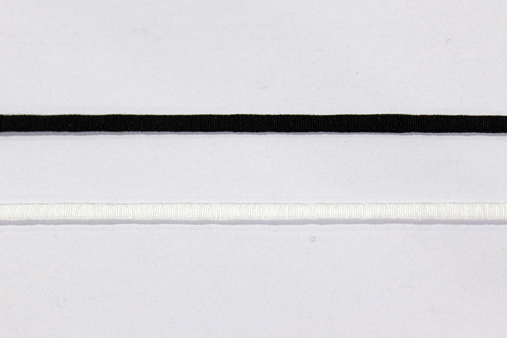

<div id="main">
	<p>
		다양한<br>마스크 끈을<br>생산합니다.
	</p>
</div>
<div class="post">
<a href="/maskloop#1"><div class="maskloop1"><span>일반 끈</span></div></a><a href="/maskloop#2"><div class="maskloop2"><span>납작한 끈</span></div></a><a href="/maskloop#3"><div class="maskloop3"><span>여러색 끈</span></div></a></div>
<a href="/certification" style="text-decoration: none !important; color: black;"><div class="info"><span style="font-size: large;   margin-top: auto;
	margin-bottom: auto;">  >> 각종 인증서 확인</span><span style="font-size: small;   margin-top: auto;
  margin-bottom: auto;">  * 이외의 필요하신 인증서는 문의 부탁드립니다.</span></div></a>
<div id="wrap-wrap">
<div id="map"></div>
<div id="wrap">
<div id="adress">
	<a style="font-size: x-large; font-weight: 600;">소재지</a><br><br>
	<i class="fas fa-map-marked-alt"></i> 경상북도 성주군 선남면 선노로 37, 미광텍스
</div><div id="tel"><a style="font-size: x-large; font-weight: 600;">연락처</a><br><br>
	<i class="fas fa-building"></i><br> 054-931-1418
	<br><i class="fas fa-mobile-alt"></i><br> 010-9317-3434<br><i class="fas fa-envelope-open-text"></i><br> mk9311418@naver.com<br><br>
	자세한 사항은 위 연락처로 문의바랍니다.
</div>
</div></div>
<script src="//dapi.kakao.com/v2/maps/sdk.js?appkey=e762ea2acca6b2fa823ccf4fb3b5a2ce"></script>
	<script>
		var mapContainer = document.getElementById('map'), // 지도를 표시할 div 
		    mapOption = {
		        center: new kakao.maps.LatLng(35.885279, 128.373758), // 지도의 중심좌표
		        level: 6, // 지도의 확대 레벨
		        mapTypeId : kakao.maps.MapTypeId.ROADMAP // 지도종류
		    }; 

		// 지도를 생성한다 
		var map = new kakao.maps.Map(mapContainer, mapOption); 

		// 지도에 확대 축소 컨트롤을 생성한다
		var zoomControl = new kakao.maps.ZoomControl();

		// 지도의 우측에 확대 축소 컨트롤을 추가한다
		map.addControl(zoomControl, kakao.maps.ControlPosition.RIGHT);

		// 마커가 표시될 위치입니다 
		var markerPosition  = new kakao.maps.LatLng(35.885279, 128.373758); 

		// 마커를 생성합니다
		var marker = new kakao.maps.Marker({
			position: markerPosition
		});

		// 마커가 지도 위에 표시되도록 설정합니다
		marker.setMap(map);
	</script>